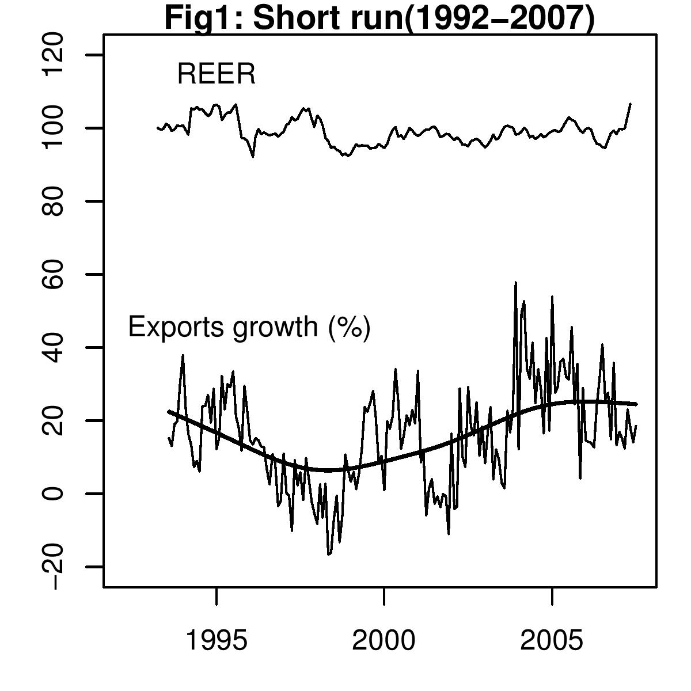
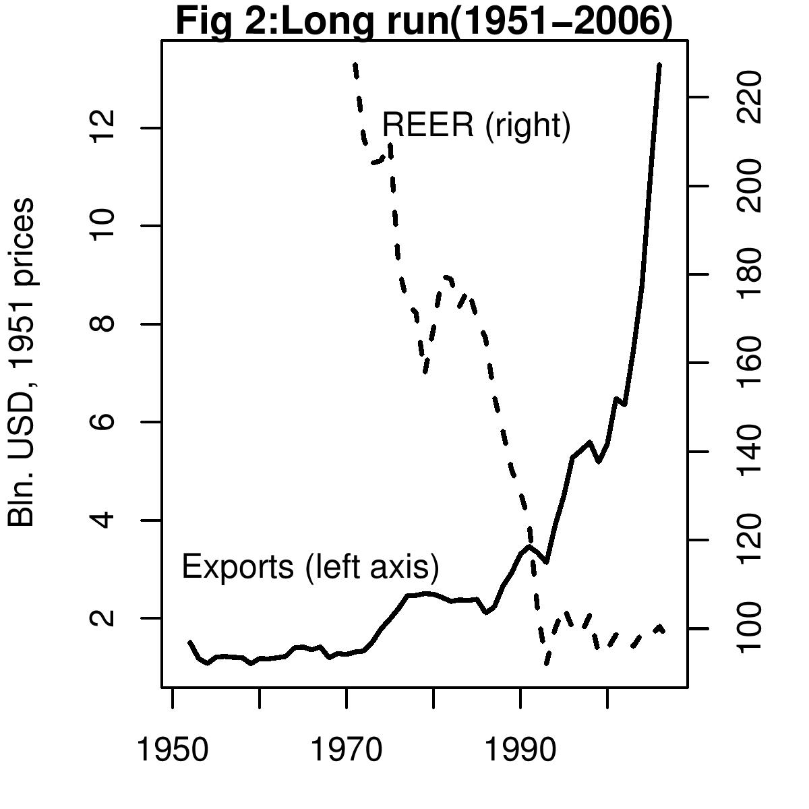

What has the rupee got to do with it?
Indian Express, 7 September 2007
 Recently released data shows that Indian merchandise exports measured in dollars grew by 18.5 percent in July 2007. Some commentators called this a rise in export growth compared to the 14 percent growth in June 2007. Others called it a slowdown in export growth. They compared it to the growth rate of exports in last July when export growth was 40.8 percent. This difference in perspective is often related to what the commentator further says about the impact of the recent rupee appreciation. There are two issues involved here. First, is there a slowdown in export growth? And, second, is the movement of the rupee responsible for the performance of exports in recent months?
To understand whether export growth has slowed down or risen, it is important to take a longer term view rather than compare growth rates for a month of our choice. In the post liberalisation period monthly export growth in US dollars grew at an average rate of 15.7 percent. When compared to this average, export growth in June was below this average, but export growth in July at 18.5 was above this average. There is no marked slowdown in export growth in July. Whether at the average of 15.7 per cent or at the July rate of 18.5 percent, exports are growing faster than GDP and India is globalising. If there is a slowdown at all, as Figure 1 shows, it started in early 2004.
Second, how far can the rupee explain export performance? Many observers are attributing changes in exports growth to changes in the rupee-dollar rate. There are several complexities which need to be borne in mind.
We cannot look at exports measured in rupees. When the rupee appreciates there is an immediate reduction in the value of USD 100, and hence, when measured in rupees the income from exports shows a sudden sharp movement. Measuring export performance in dollars is thus a better measure. The exchange rate that matters is the real exchange rate, rather than the nominal rupee dollar rate. The real exchange rate takes into account inflation differences between trading partners and competitors. When inflation abroad is stable and either the domestic inflation rises, or the nominal exchange rate appreciates, the real exchange rate appreciates, exports would lose competitiveness. Theory suggests that if world demand remains unchanged then a country witnessing an appreciation of the real exchange rate will see a reduction in the demand for its exports.
 Economists often ask the question: what is the elasticity of export demand? In other words, what does historical evidence suggest will be the change in exports when there is a one percent change in the exchange rate? The real exchange rate measure that takes into account India's major taking partners is RBI's 36-country Real Effective Exchange Rate (REER) index. Historical data shows no significant relationship either in the long run or in the short run between the REER and exports from India. Real exports, re-expressed in constant US dollars at 1951 US prices, from India since independence have witnessed 2 main phases, seen in Figure 2.
1. The first phase lasted till 1993 when exports grew at a sluggish pace of 3.36 percent per annum. In the period from 1971 to 1992 the rupee depreciated by nearly 3 percent. A steady pace of depreciation did not assure strong exports growth.
2. In the period after liberalisation, the REER did not depreciate much and was largely stable. This period saw rapid export growth in real terms of nearly 9 percent. Despite a lack of REER depreciation, India jumped to higher exports growth.
This evidence does not suggest a simple relationship between the REER and exports over the long run. It could be argued that instead of looking at such a long time period when the Indian economy witnessed structural changes, especially in terms of its outward orientation, it is more useful to look at the relationship in a shorter run and only after liberalisation. Do we see that changes in REER impact exports in 3 to 6 months? In the period after liberalisation too, if we examine monthly data we find the lack of a relationship between export growth and REER in a regression analysis that takes lags into account. This can be observed in Figure 1 which shows the post liberalisation period. It suggests that there is no systematic relationship between the REER and exports.
These empirical features are found across various ways of measuring exports and various ways of measuring exchange rates. Before we start believing a simple one-to-one relationship between export growth in India and the REER, this empirical evidence suggests that caution is in order.
Back up to Ila Patnaik's media page
Back up to Ila Patnaik's home page